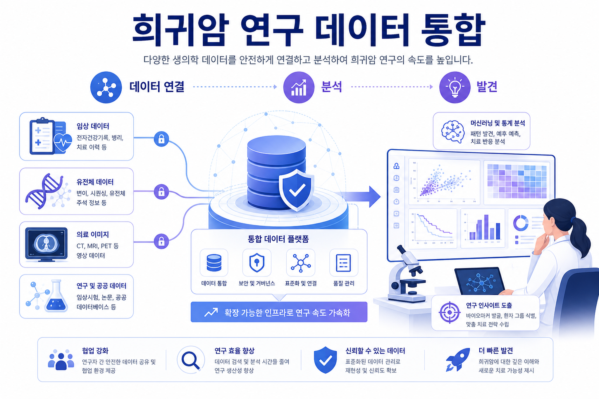
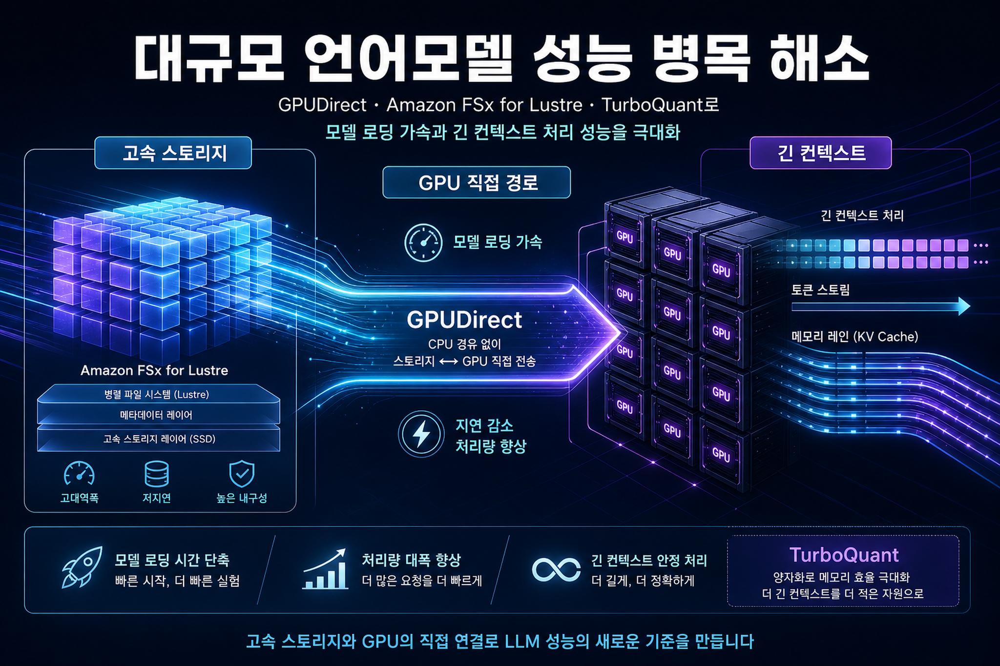
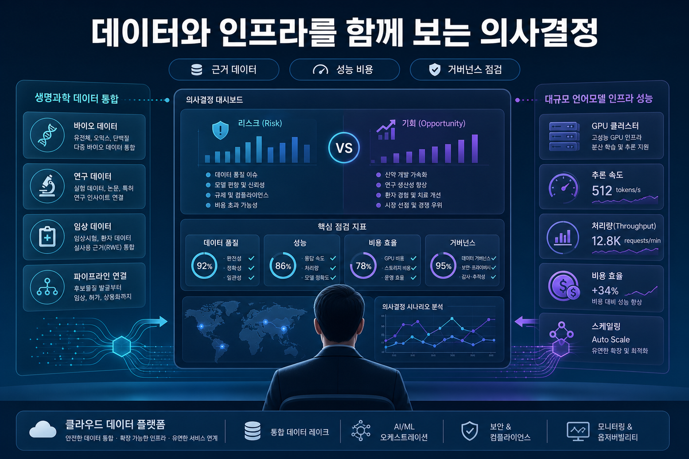

아마존웹서비스 머신러닝 블로그 · 2026-06-02
Amazon Quick 기반 희귀암 연구 데이터 통합과 발견 가속
이 글은 희귀암 연구에서 여러 생의학 데이터베이스를 통합해 연구자가 더 빠르게 패턴을 찾고 검증할 수 있도록 돕는 접근을 다룹니다. 기업 관점에서는 도메인 데이터의 연결성, 품질, 보안 경계가 분석 성과의 전제가 된다는 점이 핵심입니다.
원문 보기이번 실행에서 신규 저장한 문서 2건을 분석했습니다. 희귀암 연구 데이터 통합과 대규모 언어모델 로딩·컨텍스트 처리 성능이라는 두 관찰 축을 기업 의사결정 관점에서 정리했습니다.
아마존웹서비스 머신러닝 블로그 · 2026-06-02
이 글은 희귀암 연구에서 여러 생의학 데이터베이스를 통합해 연구자가 더 빠르게 패턴을 찾고 검증할 수 있도록 돕는 접근을 다룹니다. 기업 관점에서는 도메인 데이터의 연결성, 품질, 보안 경계가 분석 성과의 전제가 된다는 점이 핵심입니다.
원문 보기아마존웹서비스 머신러닝 블로그 · 2026-06-02
이 글은 대규모 언어모델을 더 빠르게 로딩하고 긴 컨텍스트를 안정적으로 처리하기 위해 GPU와 고속 스토리지 사이의 데이터 이동 경로를 최적화하는 방법을 다룹니다. 기업 관점에서는 모델 성능을 인프라 구조와 함께 판단해야 한다는 점이 핵심입니다.
원문 보기
희귀암 연구 글은 여러 생의학 데이터베이스를 연결해 연구자가 분석 가능한 형태로 만드는 흐름을 보여줍니다. 관찰된 사실은 데이터 연결·검색·분석이 연구 속도와 재현성의 병목이라는 점입니다.
GPUDirect, Amazon FSx for Lustre, TurboQuant 글은 모델 로딩 시간, 긴 컨텍스트 처리, GPU와 스토리지 사이 전송 경로가 성능 판단의 핵심 변수임을 보여줍니다.

Amazon Quick 관련 글은 여러 생의학 데이터 원천을 분석 가능한 구조로 묶는 접근을 다룹니다. 기업 관점에서는 데이터 연결성, 출처 추적성, 품질 관리가 분석 도구 선택만큼 중요합니다.
Amazon FSx for Lustre, GPUDirect, TurboQuant 조합은 대규모 언어모델의 시작 지연, 긴 컨텍스트, GPU 활용률 문제를 인프라 경로에서 다루는 관점을 보여줍니다.
| 수집 글 | 주요 서비스·기술 | 기업 검토 포인트 | 출처 |
|---|---|---|---|
| Amazon Quick 기반 희귀암 연구 데이터 통합과 발견 가속 | Amazon Q | Agent 관련 서비스·도구가 언급되어, 기업은 도입 전 권한, 도구 호출 기록, 비용 관측성, 검증 절차를 함께 점검해야 합니다. 모델 개발·배포·평가 흐름과 연결되는 내용이므로, 데이터 품질·평가 지표·배포 후 모니터링 기준을 원문 기능 범위와 대조해야 합니다. | 원문 |
| GPUDirect와 Amazon FSx for Lustre, TurboQuant를 활용한 대규모 언어모델 성능 개선 | Amazon EC2, AWS CloudFormation, Amazon VPC | 모델 개발·배포·평가 흐름과 연결되는 내용이므로, 데이터 품질·평가 지표·배포 후 모니터링 기준을 원문 기능 범위와 대조해야 합니다. 비용 또는 가격 변화가 관찰되어, 기존 아키텍처의 사용량·성능·계약 조건에 따른 영향 분석이 필요합니다. | 원문 |

이번 수집 글은 생명과학 연구 데이터 통합과 고성능 대규모 언어모델 인프라라는 서로 다른 영역을 다루지만, 공통적으로 데이터 이동·연결·처리 경로가 성과를 좌우한다는 신호를 줍니다.
근거는 아마존웹서비스 머신러닝 블로그의 Amazon Quick 기반 희귀암 연구 데이터 통합 글과 GPUDirect, Amazon FSx for Lustre, TurboQuant 기반 대규모 언어모델 성능 개선 글입니다.
적용 여부는 기술 흥미보다 현재 데이터 품질, 개인정보·민감정보 경계, GPU 자원 사용률, 스토리지 비용, 모델 응답 지연 요구사항을 먼저 대조해 판단해야 합니다.
연구·분석 속도 문제인지, 모델 로딩·추론 지연 문제인지, 또는 데이터 거버넌스 문제인지 먼저 분리합니다.
원문에서 제시한 전제 조건, 지원 범위, 성능 수치, 데이터 유형을 현재 환경과 비교합니다. 숫자가 없거나 환경이 다르면 확인 필요로 둡니다.
GPU, 고속 스토리지, 데이터 전송, 민감 데이터 처리, 감사 로그 요구사항을 함께 계산합니다.
생명과학·의료 데이터는 개인정보, 연구 윤리, 재식별 위험, 접근권한 통제가 핵심입니다. 원문 기능만으로 내부 준수 요건 충족을 단정할 수 없습니다.
대규모 언어모델 인프라 성능은 모델 크기, 컨텍스트 길이, 파일 시스템 구성, GPU 종류에 따라 달라질 수 있습니다. 자체 기준의 재현 검증이 필요합니다.
고속 스토리지와 GPU 직접 경로는 병목을 줄일 수 있지만, 사용률이 낮거나 데이터 이동이 과도하면 비용 효율이 떨어질 수 있습니다.
이미지 생성 목적, 삽입 위치, 원문 프롬프트, 권장 비율, 대체 텍스트는 같은 산출물 폴더의 프롬프트 로그에 보존했습니다. 화면 본문은 한국어 독자 경험을 위해 요약만 표시합니다.